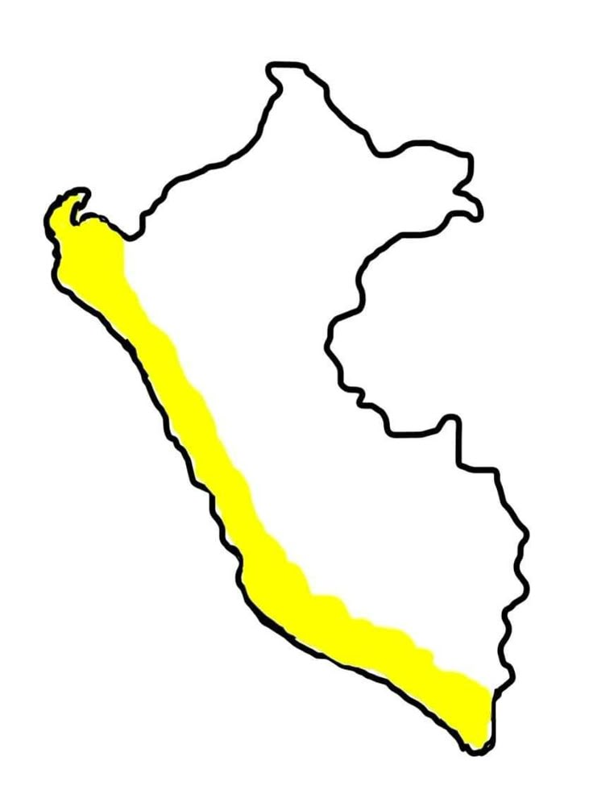
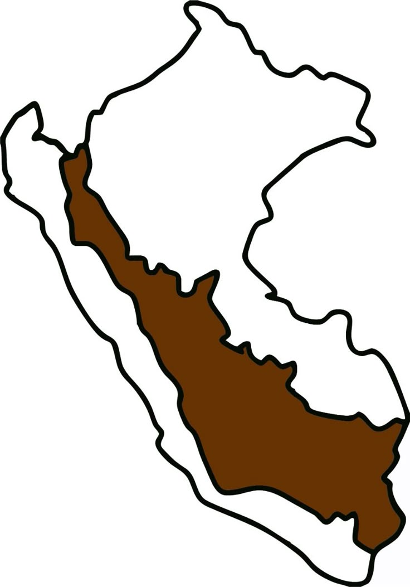
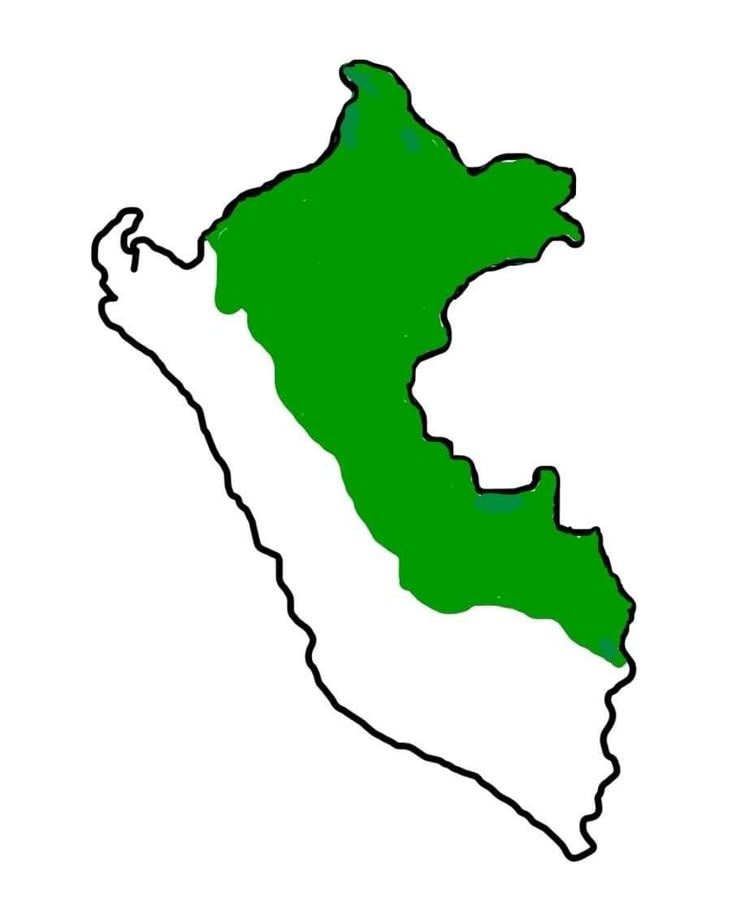

| DEPARTAMENTOS |
| COSTA (11%) | SIERRA (30%) | SELVA (59%) |
|---|---|---|
|  |  |  |
🟡 COSTA (11% del territorio):
TUMBES
| TUMBES |
Región tropical en el extremo norte del país, con clima cálido todo el año. Sus playas como Punta Sal y los manglares de Zarumilla son imperdibles. El ceviche de conchas negras es uno de sus mayores orgullos gastronómicos. Ideal para ecoturismo, naturaleza y descanso junto al mar.
Comida Típica:
- Ceviche de conchas negras
- Majarisco (plátano con marisco)
Sitios Turisticos:
- Playa Zorritos
- Manglares de Tumbes
PIURA
| PIURA |
Cuna del calor norteño y la hospitalidad, con costas encantadoras y valles fértiles. Sus playas como Máncora, Vichayito y Los Órganos atraven a surfistas y viajeros. Destaca el delicioso seco de chavelo, típico de Catacaos. Piura combina sol, mar, cultura y tradiciones muy marcadas.
Comida Típica:
- Seco de chabelo
- Ceviche de mero
Sitios Turisticos:
- Playa de Mancora
- Catacaos
LAMBAYEQUE
| LAMBAYEQUE |
Tierra de historia milenaria, hogar del Señor de Sipán y culturas preincaicas. El museo Tumbas Reales de Sipán es uno de los más importantes de América. Su emblemático arroz con pato mezcla lo criollo con lo ancestral. Rica en arqueología, folclore y gastronomía de primera.
Comida Típica:
- Arroz con pato a la chiclayana
- King kong (basado en dulce de leche)
Sitios Turisticos:
- Tumbas Reales de Sipán
- Museo Tumbas Reales
LA LIBERTAD
| LA LIBERTAD |
Trujillo, su capital, es llamada la "Ciudad de la Eterna Primavera". Entre sus atractivos figuran la ciudadela de Chan Chan y Huanchaco. El shámbar, sopa típica de los lunes, es muy representativo. Aquí se fusiona lo colonial con las culturas mochica y chimú.
Comida Típica:
- Shambar (sopa de trigo y carnes)
- Ceviche liberteño (con frijoles)
Sitios Turisticos:
- Chan chan (ciudad de barro mas grande de América)
- Huaca del Sol y la Luna
ANCASH
| ÁNCASH (COSTA Y SIERRA) |
Con costas y nevados, posee una de las geografías más impresionantes del país. El Parque Nacional Huascarán y la Laguna 69 son joyas naturales. Su plato típico, el picante de cuy, honra la tradición andina. Perfecta para el turismo de aventura y contacto con la naturaleza.
Comida Típica:
- Pecan caldo (sopa de cabeza de cordero)
- Humitas (masa de maíz dulce envuelta en hojas de maíz)
Sitios Turisticos:
- Huascarán (nevado más alto del Perú)
- Parque Nacional Huascarán
- Chavín de Huántar (sitio arquiologico)
LIMA
| LIMA |
Capital del Perú, ciudad cosmopolita con historia, modernidad y buena comida. Cuenta con sitios como el Centro Histórico, Miraflores y Pachacámac. Su icónico lomo saltado es una deliciosa fusión criolla-china. También es la capital gastronómica de Sudamérica.
Comida Típica:
- Ceviche
- Lomo Saltado
- Anticuchos
Sitios Turisticos:
- Barranco
- Huaca Pucllana
ICA
| ICA |
Conocida por su desierto, sus dunas y el oasis de Huacachina. También alberga las misteriosas Líneas de Nazca y bodegas de pisco. El carapulcra con sopa seca es un clásico afroperuano de sabor intenso. Sol, aventura, historia y buen vino te esperan en Ica.
Comida Típica:
- Carapulcra (guiso de papa seca con carne)
- Pisco Sour (bebida nacional)
Sitios Turisticos:
- Líneas de Nazca
- Huacachina (Oaisis en el desierto)
AREQUIPA
| AREQUIPA (COSTA Y SIERRA) |
Conocida como la "Ciudad Blanca", rodeada por los volcanes Misti y Chachani. Su arquitectura colonial brilla en el Monasterio de Santa Catalina y la Plaza de Armas. El rocoto relleno es el plato más representativo y sabroso de la región. Combina belleza natural, historia y una cocina potente.
Comida Típica:
- Rocoto Relleno
- Adobo araquipeño (cerdo marinado en chicha y especias)
Sitios Turisticos:
- Cañon del Colca
- Monasterio de Santa Catalina
- Volcán Misti
MOQUEGUA
| MOQUEGUA |
Pequeña región al sur con gran riqueza gastronómica y clima templado. Destaca por sus viñedos, el malecón ribereño y la campiña moqueguana. El picante de mariscos refleja su cercanía al mar y fusión criolla. Un destino tranquilo y acogedor con mucho por descubrir.
Comida Típica:
- Chicharrón de chancho con camote
- Vinos y Piscos
Sitios Turisticos:
- Valle de Omate
- Cerro Baúl
TACNA
| TACNA |
Ciudad heroica, símbolo de peruanidad y resistencia. Atractivos como el Paseo Cívico, los petroglifos de Miculla y termales de Calientes. El adobo tacneño, cocido lentamente, es parte de su esencia local. Lugar de historia, comercio y excelente gastronomía del sur.
Comida Típica:
- Picante a la tacneña
- Pastel de choclo
Sitios Turisticos:
- Arco Parabólico
- Baños termales de Calientes
🟤 SIERRA (30% del territorio):
APURIMAC
| APÚRIMAC |
Montañas profundas, puentes colgantes como el Q'eswachaka y ríos caudalosos. Sus paisajes montañosos ofrecen oportunidades para trekking y ecoturismo. El chicharrón de cerdo es uno de sus platos más celebrados. Una región que aún conserva su esencia quechua intacta.
Comida Típica:
- Qapchi (ensalada de papa con queso y ají)
- Cuy chactado (frito bajo piedra)
Sitios Turisticos:
- Cañón del Apurímac
- Sondor (Complejo arqueológico)
AYACUCHO
| AYACUCHO |
Cuna del arte popular y la Semana Santa más famosa del país. Tiene 33 iglesias coloniales, además de los restos de la batalla de Ayacucho. La puca picante es una delicia hecha con maní y papas. Tradición, espiritualidad y cultura viva definen esta región.
Comida Típica:
- Puca Picante (Guiso de papa con maní y carne de cerdo)
- Qapchi
Sitios Turisticos:
- Semana Santa (Celebración tradicional)
- Wari (Sitio arqueológico)
CAJAMARCA
| CAJAMARCA |
Escenario del histórico encuentro entre Atahualpa y Pizarro. Famosa por sus baños termales, el Cuarto del Rescate y el Carnaval. El cuy frito con papas es un manjar serrano de tradición. Historia, cultura y paisaje armonizan en esta sierra norteña.
Comida Típica:
- Cuy frito con papa
- Humitas
Sitios Turisticos:
- Baños del Inca
- Ventanillas de Otuzco
CUZCO
| CUZCO |
Capital del antiguo Tahuantinsuyo, llena de historia y energía. Desde allí accedes a Machu Picchu, Valle Sagrado y Sacsayhuamán. El chupe de quinua es nutritivo y típico de los Andes cusqueños. Patrimonio cultural y natural en cada esquina.
Comida Típica:
- Chiriuchu (plato frío con cuy, maíz y algas)
- Tamales cusqueños
Sitios Turisticos:
- Machu Picchu
- Sacsayhuamán
- Valle Sagrado
HUANCAVELICA
| HUANCAVELICA |
Una de las regiones más altas del Perú, con paisajes fríos y agrestes. Posee baños termales, iglesias coloniales y danzas como la tunantada. El mondongo huancavelicano es un guiso fuerte y sabroso. Cultura ancestral y tradiciones que resisten el tiempo.
Comida Típica:
- Patachi (Sopa de trigo con carne)
- Papa a la Huancaína
Sitios Turisticos:
- Laguna de Choclococha
- Minas de Santa Bárbara
HUANUCO
| HUÁNUCO (SIERRA Y SELVA) |
Conecta la sierra y la selva con diversidad geográfica y cultural. Tingo María y la Cueva de las Lechuzas son atractivos clave. El juane huanuqueño, versión serrana del amazónico, es singular. Un lugar de climas templados y alegría tradicional.
Comida Típica:
- Locro de gallina (Guiso cremoso)
- Pachamanca (Carnes cocidas bajo tierra)
Sitios Turisticos:
- Kotosh (Templo de las manos cruzadas)
- Cordillera Huayhuash
JUNÍN
| JUNÍN |
Desde la meseta de Bombón hasta la selva central, tiene gran diversidad. Atractivos como la Laguna de Paca, el Nevado Huaytapallana y el Valle del Mantaro. La pachamanca en horno de tierra es su plato bandera. Riqueza natural, espiritualidad andina y buen clima.
Comida Típica:
- Olluquito con charquí (Guiso de ollucos y carne seca)
- Trucha frita
Sitios Turisticos:
- Lago Junín
- Nevado de Huaytapallana
PASCO
| PASCO |
Con altitudes extremas, Oxapampa y Pozuzo brindan una fusión cultural única. La Selva Central se mezcla con tradiciones austriacas y alemanas. La trucha frita con yuca es muy consumida en zonas altoandinas. Ideal para turismo rural, ecológico y gastronómico.
Comida Típica:
- Picante de cuy
- Pachamanca
Sitios Turisticos:
- Laguna de Punrun
- Parque Nacional Yanachaga-Chemillén
PUNO
| PUNO |
Ubicada junto al mítico Lago Titicaca, cuna de leyendas andinas. Islas flotantes de los Uros, Amantaní y Taquile son mágicas y únicas. El cancacho puneño, cordero al horno con papas, es tradicional. Una región de espiritualidad, danza y paisaje incomparable.
Comida Típica:
- Trucha frita
- Chairo (Sopa andina de carne y chuño)
Sitios Turisticos:
- Lago Titicaca
- Islas Flotantes de los Uros
🟢 SELVA (59% del territorio):
AMAZONAS
| AMAZONAS |
Región montañosa y selvática con herencia chachapoya. La Fortaleza de Kuélap y las cataratas de Gocta son asombrosas. El purtumute, guiso de frejoles con maíz, es parte esencial de su cocina. Naturaleza, arqueología y cultura en perfecta armonía.
Comida Típica:
- Juanes (Arroz con gallina envuelto en hoja de bijao)
- Tacacho con cecina (Plátano asado con carne ahumada)
Sitios Turisticos:
- Kuelap (Fortaleza preinca)
- Catarata Gocta (Una de las más altas del mundo)
LORETO
| LORETO |
La región más extensa del Perú, con Iquitos como capital amazónica. Puedes explorar el río Amazonas, la Reserva Pacaya Samiria y pueblos nativos. El inchicapi de gallina, sopa de maní y yuca, es delicioso. Aventura, biodiversidad y cultura amazónica pura.
Comida Típica:
- Patarashca (Pescado envuelto en hoja de bijao)
- Juanes
Sitios Turisticos:
- Río Amazonas
- Reseva Nacional Pacaya_Samiría
MADRE DE DIOS
| MADRE DE DIOS |
Corazón de la biodiversidad, con áreas protegidas como Tambopata y Manu. Puerto Maldonado es su punto de partida hacia la selva profunda. El paiche con plátanos verdes es típico y muy nutritivo. Ideal para turismo ecológico, observación de aves y conexión natural.
Comida Típica:
- Tacacho con cecina
- Sopa de motelo (tortuga)
Sitios Turisticos:
- Parque Nacional Manu
- Lago Sandoval
SAN MARTIN
| SAN MARTÍN |
Selva alta con cataratas, café de calidad y reservas naturales. Tarapoto y Moyobamba ofrecen naturaleza, cultura y aguas termales. La cecina con patacones es un clásico de la región. Excelente para quienes buscan aventura, sabores y paisajes.
Comida Típica:
- Inchicapi (Sopa de maní con gallina)
- Juanes
Sitios Turisticos:
- Catarata de Ahuashiyacu
- Río Mayo
UCAYALI
| UCAYALI |
Región vibrante en el corazón de la Amazonía, con capital en Pucallpa. Destinos como la Laguna Yarinacocha permiten contacto directo con la naturaleza. El tacacho con cecina es su plato más tradicional y sabroso. Ideal para conocer la cosmovisión shipibo-conibo.
Comida Típica:
- Tacacho con cecina
- Patarashca
Sitios Turisticos:
- Parque Nacional Alto Purús
- Río Ucayali